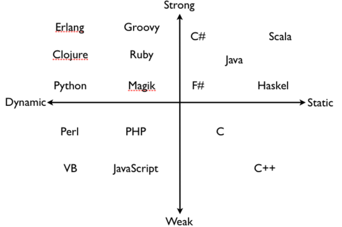
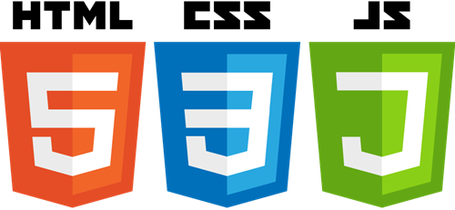
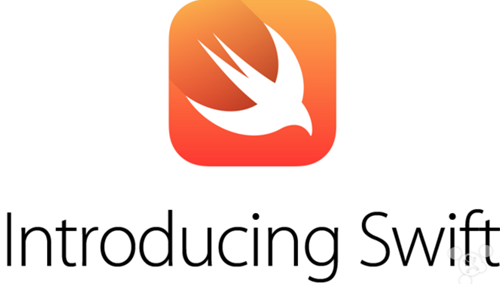

プログラミングの世界に身を置く私たちにとって、今は転換点に来ています。10年前、プログラマーたちは動的言語に夢中になっていました。私たちのほとんどにとって、動的言語はプログラミングをより簡単にするだけでなく、一種の流行でもありました。今日、動的言語はもはや特別な支持を受けていません。現在のプログラマーは新しい言語と古い言語を組み合わせてプロジェクトを開発しています。私は思わず尋ねたくなります。競争力を維持するために、プログラマーが最も恒久的に習得すべきプログラミング言語はどれなのでしょうか？
将来どのプログラミング言語が注目されるかという問題を議論する前に、まず異なるプログラミング言語間の類似点と相違点を見てみましょう。
静的言語 vs. 動的言語
動的言語と言うとき、この「動的」は実際には変数の型のことを指しています。動的言語を使ってプログラムを書くとき、変数を宣言し、プログラムの実行中にその変数の型を変更することができます。動的言語と対照的なのは静的言語、または強い型付けの言語です。例えば、C++とJavaは強い型付けの言語であり、JavaScript、PHP、Perlは動的型付けの言語です。
C++では、変数を宣言するときに同時に変数の型を指定する必要があります。プログラムの実行中にこの変数の型を変更しようとすると、コンパイラーはエラーを報告します。これはJavaでも同じです。

しかしJavaScriptは異なります。JavaScriptプログラムの実行中に変数の型を変更できます。実際、変数の宣言時にその変数の型を指定する必要はなく、変数を使用するとき、最初に整数を代入し、その後文字列でその整数を上書きすることができます。これは動的型付けの言語ではすべて許可されています。
動的言語は最近になってやっと広く使われるようになりましたが、実際にはこの概念は50年前にすでに提唱されていました。
関数型言語
動的言語の発展に伴い、人々の関数型言語への関心も高まっています。関数型言語では、関数自体を変数に格納でき、変数に格納された関数を別の関数の引数として渡すこともできます。現在のほとんどの言語は、ある程度関数型プログラミングをサポートしています。例えばC++では、プログラマーは関数にポインターを渡すことができます。JavaScriptなどの一部の言語は、関数の受け渡しをより簡単にしています。そのため、一般的にC++は真の意味での関数型言語とは見なされず、JavaScriptは関数型言語と見なされ、Haskellは一般に関数型言語の代表的な例と見なされています。
ガベージコレクション機構
理論のには、コードを正しく書けば、バグは一切発生しません。それは素晴らしいことのように聞こえます。しかし実際には、他の多くのプログラマーと一緒に大規模なプロジェクトを完成させる場合、頻繁に発生するバグが一つあります。それがメモリリークです。変数を定義し、その変数を使い終わった後にこの部分のメモリをすぐに回収しないと、メモリリークが発生したと言います。メモリリークが発生したのにすぐに気づかないと、プログラムの実行時間が増えるにつれてプログラムはどんどん大きくなり、システムのすべてのメモリを消費し尽くして、システムがクラッシュします。それは恐ろしいですね！

「毎回変数を使い終わったらすぐにメモリを解放すれば、メモリリークは発生しないのでは？」と思うかもしれません。考え方は良いのですが、実際の状況はそれよりもはるかに複雑かもしれません。例えば、データを格納するためにリンクリストを申請し、そのリンクリストを別の関数に渡したとします。その関数は他の人が書いたもので、その人が書いた関数の中でこのリンクリストをコピーした場合、あなたはそのことを知りません。このリンクリストを削除すべきでしょうか、それとも保持すべきでしょうか？このような状況に基づいて、プログラマーは代替案を考え出しました。メモリ回収の作業をシステムに任せることです。変数を使わなくなったとき、システムがメモリをスキャンして使われていないメモリを見つけ、自動的に回収します。これをガベージコレクション機構と呼びます。新しく開発される言語にとって、これは非常に重要な特徴です。ガベージコレクションの背後にある考え方は、プログラミングをより簡単にし、プログラマーが素晴らしいソフトウェアを創造することに集中できるようにすることです。
説明しておくと、実際にはいくつかの異なるガベージコレクション機構が存在します。一つはシステムが定期的にメモリをスキャンし、もう使われていないメモリを発見する方法です。もう一つはシステムが各変数に対してテーブルを保持し、変数が使われなくなったことを発見するとすぐに削除する方法です。技術的には、後者はガベージコレクション機構ではなく「参照カウント」ですが、達成される効果は同じです。
仮想マシン

Javaが1990年代半ばに登場したとき、人々はJavaがコードを直接アセンブリ言語にコンパイルしないことについて非常に気にしていました。C++とは対照的に、Javaはコンパイル時にプログラムをまずバイトコードと呼ばれる中間コードにコンパイルします。実行時には、システムは仮想マシンを呼び出してバイトコードを実行し、場合によってはバイトコードをアセンブリコードにコンパイルするだけです。このコンパイル方法が登場したばかりの頃、プログラマーはその遅さを不満に思いましたが、今ではもちろん問題ではありません。多くの言語が仮想マシンの方式で実行されています。例えば、前述のJava、C#などです。現在、このタイプの言語は速度面で大きく発展しています。
言語
ここまで話してきましたが、プログラマーは一体どの言語を学ぶべきでしょうか？以下に、将来の仕事で需要が豊富な5つの言語を挙げます。その他に、6つ目の言語を「honorable mention」として挙げておきます。

JavaScript、HTML5、CSS3：
技術のには、HTML5は言語ではなく、CSS3やJavaScriptと一緒にWebベースのアプリケーションを構築できるようにする技術です。ブラウザー内で動作するソフトウェアを作成できます。その利点は、構築したアプリケーションがこれまでにない移植性を持つことです。ほぼすべてのデバイス（スマートフォンを含む）で動作します。数年前、FacebookはHTML5を使ってモバイルアプリを構築し始めました。彼らは時代を先取りしていましたが、当時のHTML5はまだ成熟していませんでした。しばらくして、彼らは従来の方式に戻りました。過去2年間で、ブラウザーは次々と最高のHTML5技術を実装し始め、JavaScriptへの需要が高まりました。競争力を維持したいなら、これは学ばなければならない技術です。（サーバー側では、多くの大企業がNode.jsの形でJavaScriptを使用しています）。
JavaScript の例：
次の例は、JavaScriptがどのように関数を変数に格納し、それを別の関数に渡すかを示しています。JavaScriptを学ぶには、以下を参照してください：JavaScript チュートリアル。
var myfunc = function() {
alert('hi');
};
setTimeout(myfunc, 2000);
C#：
15年前、MicrosoftはC#を生み出しました。それ以来、C#は発展と成長を続けています。C#の構文はJava（またC++にも）似ています。C#プログラミングのソフトウェアとしてはVisual Studioが第一選択で、無料版と有料版の両方があります。
C#は強い型付けの言語であり、仮想マシンを備えています。最初のリリース版では関数型プログラミングのサポートがほとんどありませんでしたが、2006年前後にMicrosoftはこの言語に関数型プログラミングの機能をいくつか追加しました。Javaと同様に、C#にも独自のガベージコレクション機構があります。
C# の例：
この例では、Programというクラスを定義しています。ProgramにはMainという関数が含まれています。プログラムはMain関数から実行を開始します。Main関数は、強い型付けの整数型変数xを定義し、画面にxの値を出力します。C#を学ぶには、以下を参照してください：C# チュートリアル。
using System;
class Program
{
static void Main()
{
int x = 1000;
Console.WriteLine(x);
}
}
Java：
Javaはもうすぐ20周年を迎えようとしています。今日に至るまで、Javaは発展と成熟を続けています。2004年、私の同僚の一人がJavaは「おもちゃの言語」だと言いました。初期の成長の痛みを経て、Javaはもはやおもちゃの言語ではありません。数え切れないほどのウェブサイトやデータベースを支えており、オープンソースのオフィススイートもJavaで開発されています。現在、Javaの見通しは依然として明るいです。
Javaは強い型付けの言語であり、ガベージコレクション機構を備えた仮想マシン内で動作します。関数型言語ではありませんが、関数型プログラミングの特徴をいくつか備えています。
Java の例：
JavaとC#は多くの点で似ています。Javaプログラムでは、main関数から実行が始まります。上記のC#の例と同様に、main関数で整数型の強い型付けの変数xを定義し、画面にxの値を出力します。Javaを学ぶには、以下を参照してください：Java チュートリアル。
public class HelloWorld
{
public static void main(String[] args) {
int x = 1000;|
System.out.println(x);
}
}
PHP：
PHPは使いやすい汎用プログラミング言語です。その構文はJavaやC++に似ています。非常に単純なレベルでは、PHPはWebページに動的なテキストコンテンツを埋め込むために使用されます。例えば、Webページに現在の日付を出力するPHPコードがある場合、Webページのコードをブラウザーに送信すると、対応するPHPコードが画面に現在の日付を出力します。PHPはWebページに日付を出力する以上のことができます。PHPのクラスライブラリはデータベースを操作でき（考えられるほぼすべてのデータベースを処理できます）、科学計算もでき、テキストも処理できます。PHPの未来は依然として明るいです。
PHP の例：
PHPコードはHTMLドキュメントに埋め込まれます。このPHPコードはタイムゾーンをLos Angelesに設定し、現在の時刻を出力します。ブラウザーがHTMLドキュメントを解析するとき、PHPコードの部分はコードの出力結果に置き換えられます。そのため、最終的に画面に表示されるのは「Hello! The current time is」の後に現在の時刻が続くものになります。PHPを学ぶには、以下を参照してください：PHP チュートリアル。
<html>
<body>
Hello! The current time is
<?php
date_default_timezone_set('America/Los_Angeles');
echo (strftime('%c'));
?>
</body>
</html>
Swift：
これはAppleが作ったまったく新しい言語です。一般的には、新しい言語を学ぶことをお勧めしません。しかし、私たちがAppleについて話していることを考慮してください。そして、現在このまったく新しい言語を使ってiOSアプリを作成することができます。実際、SwiftがiOSプラットフォームプログラミングの未来になることを示す兆候がすでにあります。Swiftの構文はJavaScriptに非常に似ていますが、セミコロンと括弧がありません。

Swiftは強い型付けの言語であり、ガベージコレクション機構を備えた仮想マシン内で動作します。
Swift の例：
この例では、strという変数を定義し、文字列を格納しています。strの型が明示されていませんが、Swiftは強い型付け言語であり、コンパイラーは代入文の右側の文字列からstrが文字列型であると判断します。Swiftを学ぶには、以下を参照してください：Swift 入門チュートリアル。
var str = "Hello, World!" println (str)
Erlang：
Erlangは、エリクソンのエンジニアが1986年に生み出したプログラミング言語です。元々は通信分野専用のプログラミング言語でしたが、今では汎用のプログラミング言語に発展し、クラウドベースの高性能な並列計算で広く使われています。現在、人々はErlangを使ってCouchDBやRiakなどの強力なソフトウェアを開発しています。これは一風変わった言語で、文字列の扱い方が非常に独特ですが、学ぶのは簡単でもあります。
Erlangを学ぶべきでしょうか？Erlangを必要とする仕事は多くありません。しかし、この言語を本当に習得すれば、おそらく素晴らしい仕事を得られるでしょう。これは選択です。この言語を本当に習得するまでに、多くの労力を注ぐ必要があります。一度習得してしまえば、見返りも大きいです。
Erlangの例：
以下は「hello world」サンプルの複雑なバージョンです。覚えておいてください、Erlangは成熟した言語です。本当にこの言語を学ぼうと思っているなら、次のサイトを訪れてください：http://learnyousomeerlang.com。
-module(hello).
-export([start/0]).
start() ->
spawn(fun() -> loop() end).
loop() ->
receive
hello ->
io:format("Hello, World!~n"),
loop();
goodbye ->
ok
最後に
プログラマーはどこでも仕事を見つけられることは間違いありませんが、必ずしも自分が特に好きなポジションとは限りません。重要なのは、実際に役立つ技術を学び、あなたにふさわしい良い仕事を見つけることです。JavaScript、C#、Java、PHP、C++を学ぶのは間違いありません。Swiftを学び始めれば、将来の就職状況は非常に良好です。高性能プログラミングを試してみたいなら、Erlangを見てみてください。Erlangを必要とする仕事がすぐに現れるとは限りませんが。今どの言語に取り組んでいても、着実に極めるまで学ぶことが重要です。
（英語の出典：News.Dice、翻訳者：moqiguzhu）